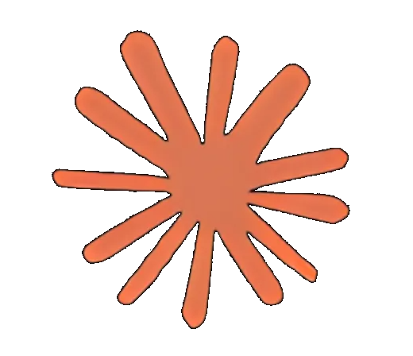
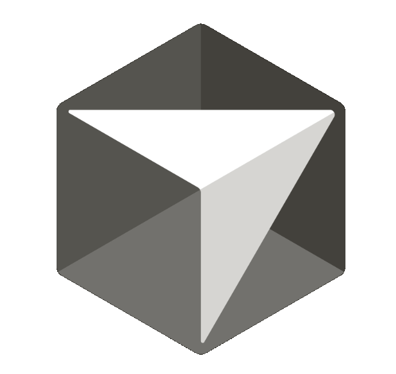
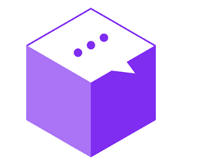
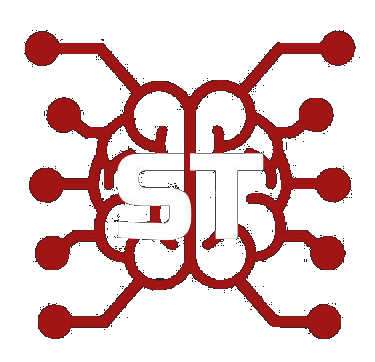

Платите в 50× меньше
за Claude Code.
Оригинальные модели Opus 4.7, Sonnet 4.6, Haiku 3.5 через OpenAI-совместимый endpoint. Без VPN, валютных конвертаций и миграции — меняете base_url, остальные 99% кода работают как раньше.
За три шага. Без миграции.
Регистрация занимает 30 секунд. Дальше — одна замена base_url, и весь ваш существующий код продолжает работать.
Получите ключ
Регистрация по email или Telegram. Тестовый баланс начисляется автоматически — миграция не нужна.
Замените base_url
Используете OpenAI SDK или Anthropic SDK — оба совместимы. Endpoint работает везде, где есть HTTPS.
Выберите модель
Параметром model переключайтесь между Opus 4.7, Sonnet 4.6, Sonnet Thinking, Haiku 3.5 без рестарта.
Один ключ.
Все модели, все способы оплаты.
Прозрачный биллинг
Списания по реальным токенам с множителем модели. Подробная история запросов и расход — в личном кабинете.
OpenAI и Anthropic API
Два совместимых эндпоинта: /v1/chat/completions и /v1/messages. Работает с любыми SDK.

Все модели Claude
Opus 4.7, Opus 4.6, Sonnet 4.6, Sonnet 4, Sonnet Thinking, Haiku 3.5. Переключение через параметр model.
Оплата из России
СБП, карта российского банка, ЮMoney, CryptoBot. Без валютных конвертаций и без VPN.
Реальные данные.
Без маркетинговой математики.
Одна строка.
Без миграции.
Scarlex V2 совместим с OpenAI SDK. Меняете base_url и ключ. Остальные 99% кода работают как раньше.
ДО · ANTHROPIC DIRECT
from openai import OpenAI client = OpenAI( api_key="sk-ant-...", base_url="https://api.anthropic.com/v1", ) r = client.chat.completions.create( model="claude-opus-4-7", messages=[{"role": "user", "content": "Привет"}], ) # расход: ~1 500 ₽ за сессию
ПОСЛЕ · SCARLEX V2 — ⎘ COPY
from openai import OpenAI client = OpenAI( api_key="sk-scarlex-...", base_url="https://api.scarlex.ru/v1", ) r = client.chat.completions.create( model="claude-opus-4-7", messages=[{"role": "user", "content": "Привет"}], ) # расход: ~50 ₽ за сессию · −95%
Плати меньше, чем провайдеру.
Прозрачные тарифы за 1 миллион токенов. Без скрытых множителей.
| Модель | Anthropic input/output | Scarlex input/output | Экономия |
|---|---|---|---|
| Claude Opus 4.7 NEW | $3.00 / $15.00 | 20 ₽ / 20 ₽ | до 30× |
| Claude Opus 4.6 stable | $3.00 / $15.00 | 20 ₽ / 20 ₽ | до 30× |
| Claude Sonnet 4.6 balanced | $0.90 / $4.50 | 6 ₽ / 6 ₽ | до 30× |
| Claude Sonnet 4 | $0.90 / $4.50 | 6 ₽ / 6 ₽ | до 40× |
| Sonnet Thinking reasoning | $0.90 / $4.50 | 6 ₽ / 6 ₽ | до 30× |
| Claude Haiku 3.5 | $0.25 / $1.25 | 2 ₽ / 2 ₽ | до 50× |
Работает там, где работаете вы.
Поскольку Scarlex V2 — стандартный OpenAI / Anthropic endpoint, он подключается к любому совместимому клиенту за минуту.





Ответы.
Это оригинальные модели Claude или их fine-tune?
Почему дешевле, если модели те же?
Нужен ли VPN?
Что с приватностью промптов?
Можно ли использовать в Claude Code?
Есть ли rate limit?
Не нашли ответ? Напишите в Telegram.
Регистрация за 30 секунд.
Работает с любой IDE и SDK. Тестовый баланс — после регистрации.